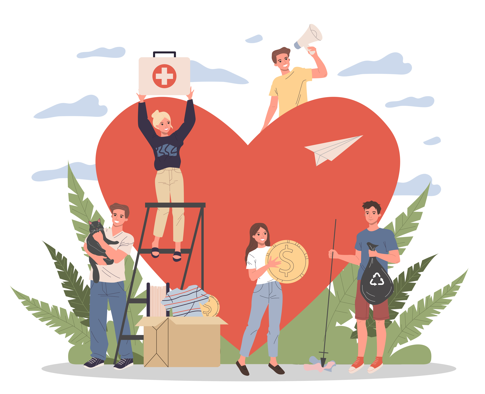

Community Service
Volunteering as a Hobby
 Community service is a really enjoyable and rewarding way to spend free time. Many people do not think about volunteering as a hobby because it is something they have been required to do for one reason or another. When a person is required to do community service they often end up doing something that they don't enjoy which makes it feel like a chore but this does not have to be the case. There are many different ways to engage in community service that do not feel like service at all but can be really enjoyable and even help you feel good about yourself!
The possibilities of ways to do community service are endless! One thing you can do is charity work like organizing fundraisers and gathering donations. Donations can include a variety of things from clothing and books to food. You can also volunteer at an animal shelter and play with dogs, tutor children, help clean up around your community, garden, or do a variety of other things. If you have another hobby you can turn that hobby into community service and use it to help your community!
One of the best parts about doing community service is helping others and connecting with other people! You can meet some really amazing people through community service whether they are the people you are volunteering with or the people you're volunteering for. You can also bring friends and to service together which is a really great boding activity! Community service is a great hobby and a fun way to spend your time!